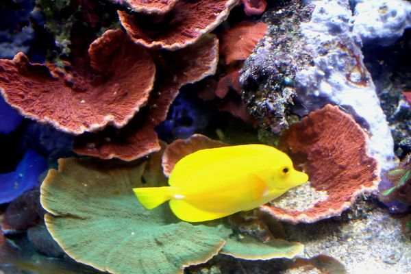

MağazaÖrnek Mahallesi'ndeki raf arası
Petilya Pet Shop, Ataşehir'in Örnek Mahallesi'nde, Yunus Emre Caddesi üzerinde bir evcil hayvan mağazası. Kedi, köpek, kuş ve akvaryum dostları için mama, kum, aksesuar ve bakım ürünleri; haftanın her günü açık.
- Örnek, Yunus Emre Cd No:28A, 34704 Ataşehir/İstanbul
- Pzt–Cum 09:00–21:00
- Instagram: @petilya_petshop_ornek
Raflarda neler var?
Bir pet shopun temel rafları. Belirli bir ürün, marka ya da boyut arıyorsanız sorun; stok bilgisini iletelim.
- Kedi ve köpek mamasıYavru, yetişkin ve özel ihtiyaçlara yönelik mama seçenekleri; kuru ve yaş.
- Kum ve hijyenKedi kumu, çiş pedi, şampuan, ıslak mendil ve temizlik ürünleri.
- Aksesuar ve oyuncakTasma, kayış, yatak, taşıma çantası, tırmalama ve oyuncaklar.
- Ödül ve atıştırmalıkEğitimde ve günlük kullanımda ödül mamaları, çiğneme ürünleri.
- Kuş ve akvaryumKuş yemi, kafes ve tünekler; akvaryum yemi, filtre ve su bakım ürünleri.
- Ürün danışmanlığıKararsız kaldığınızda dostunuza uygun ürünü birlikte seçelim.

Temsili görsel374 değerlendirme, ortalama 4,7
Google Haritalar'da Petilya Pet Shop Ataşehir için 374 kişi puan verdi; ortalama 5 üzerinden 4,7.
Yorumları burada tekrar yazmıyoruz; hepsini kendi yerinde, Google'da okuyabilirsiniz. Siz de alışverişinizden sonra deneyiminizi orada paylaşabilirsiniz.
Mağazaya sorabilecekleriniz
Bir soruya dokunun; WhatsApp, soru yazılmış halde açılır. Göndermeden önce dilediğiniz gibi düzenleyebilirsiniz.
Haftanın yedi günü açık
Hafta içi sabah 09:00'da, cumartesi 09:30'da, pazar 10:30'da açılır; her gün 21:00'e kadar.
Pzt–Cum 09:00–21:00
Akşam işten dönerken mama ya da kum almak için uğrayabilirsiniz. Gelmeden önce listenizi gönderirseniz ürünlerin durumunu önceden öğrenirsiniz.
- Pazartesi09:00–21:00
- Salı09:00–21:00
- Çarşamba09:00–21:00
- Perşembe09:00–21:00
- Cuma09:00–21:00
- Cumartesi09:30–21:00
- Pazar10:30–21:00
Mahalledeki sokak dostları için
Örnek Mahallesi'nde de pek çok kedi ve köpek sokakta yaşıyor. Onlara mama ve su bırakırken işe yarayan genel öneriler:
Kuru mama ve temiz kap
Kuru mama dışarıda yaş mamaya göre daha geç bozulur. Kapları düzenli yıkayın; artan mamayı toplayın.
Her mevsim su
Yazın gölgede taze su, kışın donmuş mu diye sık kontrol. Su, mama kadar önemlidir.
Kış barınağı
Rüzgâr almayan, yerden yükseltilmiş küçük kulübeler iyi gelir. İçine battaniye yerine saman koyun; battaniye ıslanınca soğuk tutar.
Kaputa tıklayın
Soğuk günlerde kediler araba motoruna sığınabilir. Çalıştırmadan önce kaputa birkaç kez vurun. Yaralı bir hayvan görürseniz belediyenin veteriner birimine haber verin.